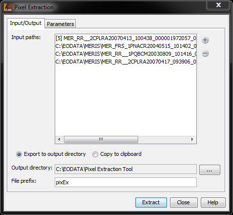
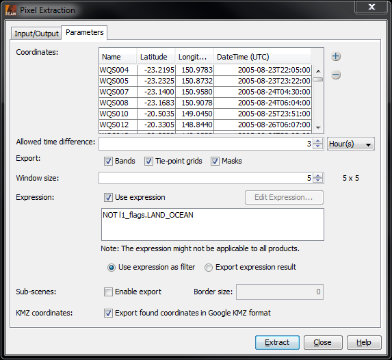

| Pixel Extraction |
|
Basically, the Pixel Extraction Tool allows to extract the pixel values given by a user-specified list of geographic coordinates from a given list of data products. However, a number of additional parameters may be passed to the tool, for example the size of the area around the geographic coordinate which is to be considered.
Note that the Pixel Extraction Tool replaces the "Export Pin Pixels"-tool.
The Pixel Extraction Tool generates output in the widely used and very general CSV-format, using tabstops as
separators.
It writes a file for each product type it has found within its input products (such as MER_FRS), each starting with
a header looking like this:
# BEAM pixel extraction export table
#
# Window size: 1
# Expression: l1_flags.LAND_OCEAN
# Created on: 2010-09-17 14:53:21
The header is followed by the table with the actual data; it might look like the following:
| Expression result | ProdID | CoordID | Name | Latitude | Longitude | PixelX | PixelY | Date(yyyy-MM-dd) | Time(HH:mm:ss) | radiance_1 | radiance_2 |
| true | 0 | 1 | pin_1 | 41.31899 | 2.1386652 | 459.0 | 853.0 | 2003-08-09 | 12:14:16 | 157.6424 | 163.6796 |
| true | 1 | 1 | pin_1 | 41.31899 | 2.1386652 | 459.0 | 853.0 | 2005-08-09 | 18:15:26 | 234.534 | 143.423 |
| false | 3 | 2 | pin_2 | 43.3452 | 12.1232 | 539.0 | 533.0 | 2001-07-05 | 12:07:86 | 423.522194 | 156.625496 |
In the following table, the entries are explained in detail.
| Field | Description |
|---|---|
| Expression result | True if the value matches the expression, false otherwise. Is omitted when expression is used for filtering. |
| ProdID | An ID for the product with relevance within the extracted data. |
| CoordID | An ID for the coordinate with relevance within the extracted data. |
| Name | The coordinate's name, if available. |
| Latitude | The coordinate's latitude value. |
| Longitude | The coordinate's longitude value. |
| PixelX | The data product's pixel value in x direction corresponding to the latitude value. |
| PixelY | The data product's pixel value in y direction corresponding to the longitude value. |
| Date(yyyy-MM-dd) | The data product's sensing date. |
| Time(HH:mm:ss) | The data product's sensing time. |
| radiance_1 | Exemplarily: the first of the bands considered for value extracting. |
| radiance_2 | Exemplarily: the second of the bands considered for value extracting. |
The user interface of the Pixel Extraction Tool consists of two panes. The first is an Input/Output-pane, which allows the user to specify
The Input/Output Pane allows to specify the input products and the output mode.

The Input/Output Pane
Input paths:
The list contains the data products already chosen for extraction as well as paths to be searched
for data products. Using the  -Button, data products can be added to
the list in multiple ways:
-Button, data products can be added to
the list in multiple ways:
Time extraction: If the products carry no time information that is readable by the BEAM reader, it is possible to extract the time information from the product filename. In order to do so, the date/time pattern needs to be provided (which would be, e.g., ddMMyyyy_HHmmss or for files like sst_26012010_164712.nc or yyyyDDD for SST L3 product like A2010159.L3m_DAY_SST_4), and the pattern in the filename needs to be provided, telling the software if the pattern appears once or twice.
Output directory: All output is written to the selected directory.
File prefix: The specified file prefix is used to prefix the files which are written.
The Parameters Pane allows to specify several parameters used for the extraction.

The Parameters Pane
Coordinates: The coordinates table shows the user-specified geographic coordinates which are used to extract the values. They consist of a name and their latitude/longitude-values. Initially, the table is filled with the pins of the product currently selected in VISAT. Additional coordinates may be added by
Allowed time difference: Specifies how big the difference might be between the time of a pixel and the time of the coordinate.
Export: Specifies if bands, tie-point grids and/or masks should be included in the output.
Window size: The window size specifies the number of pixels surrounding the pixels derived from the given geographic coordinates to be exported. That is, when setting the window size to 3, the values for 3x3=9 pixels will be extracted. The window size must be odd.
Pixel value aggregation method: The user can choose between a number of aggregation methods when a window size bigger than 1x1 is used. Choosing such an aggregation method, the pixel values from the window are all aggregated, so that only a single aggregated value for each coordinate will be exported. If no aggregation is selected, values of all pixels in the window will be exported. The aggregation methods that may be used are:
Expression:
A band maths expression can be specified to filter the values to output. The "Edit Expression..."-button
opens the expression editor, which can be used for easily editing an expression. It is only available if the
input product list of the "Input/Output"-pane contains at least one data product; however, in any case an expression
may manually be declared.
There are two options of how to use the expression: either the expression is used to filter the values to output,
that is, values which do not satisfy the expression are ignored. In the other case, the information of the value met
the expression is added to the output.
Sub-scenes: Enables the export of sub-scenes. The scenes contain at least all coordinates (including the specified window) found in one product. Additionally the size of a border can be specified by which the exported scene size extended.
KMZ coordinates: All coordinates considered for the output are collected in one KMZ file, which can be used to display the coordinates in Google Earth.
Match with original input: The pixel extraction allows outputting of correlative data together with the data that is extracted. This checkbox is only enabled if coordinates that carry correlative data have been added.
Copyright © 2010 by Brockmann Consult (beam-issues@brockmann-consult.de). All rights reserved.